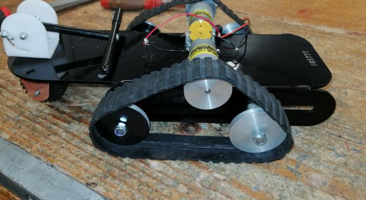
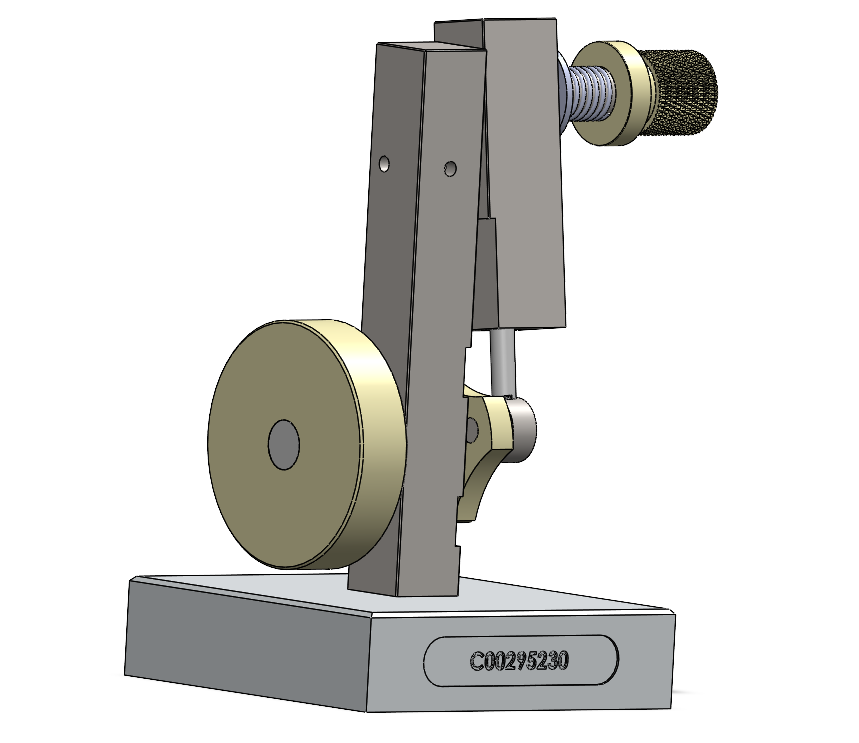
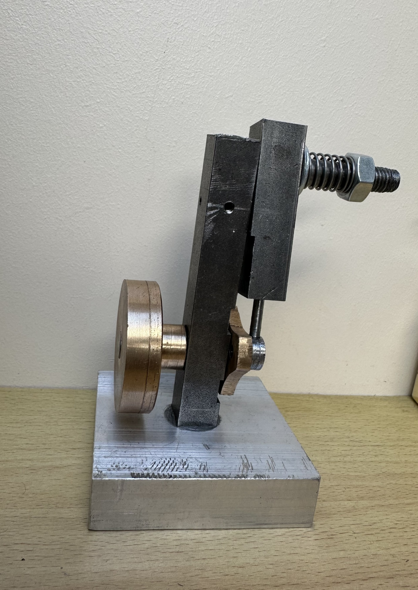
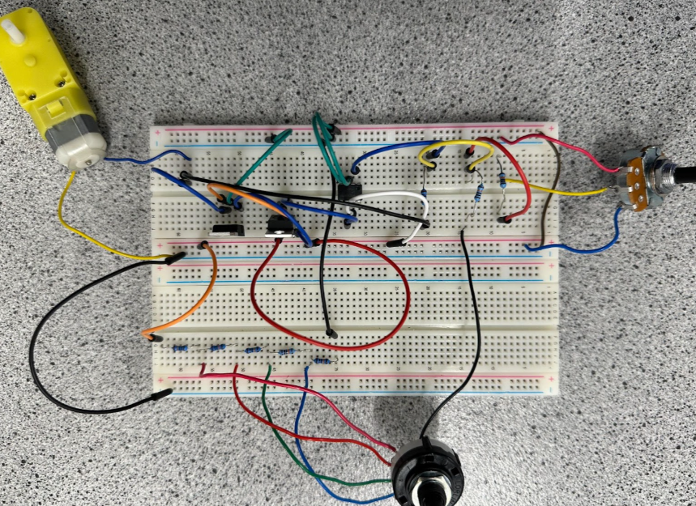
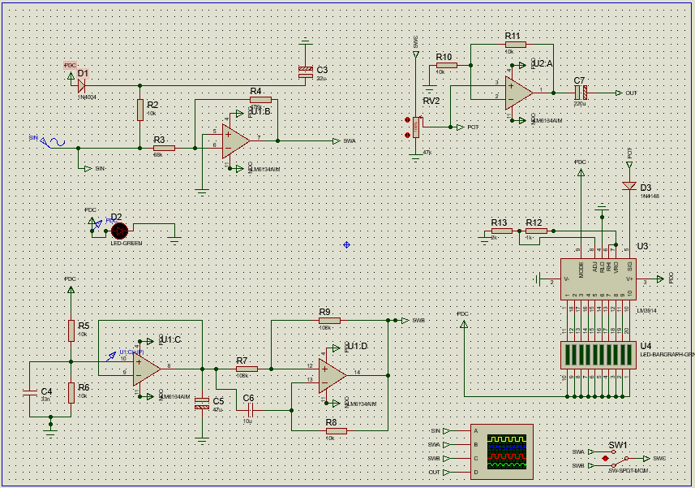
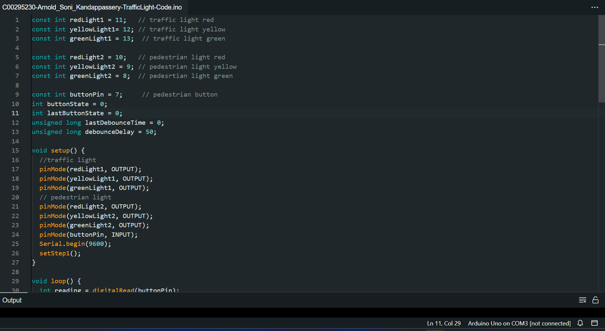
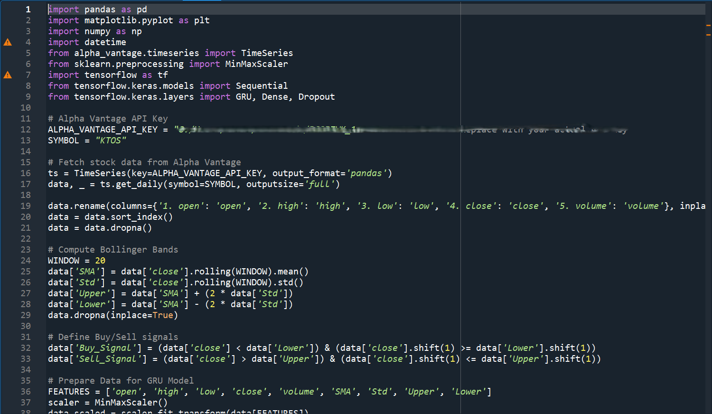
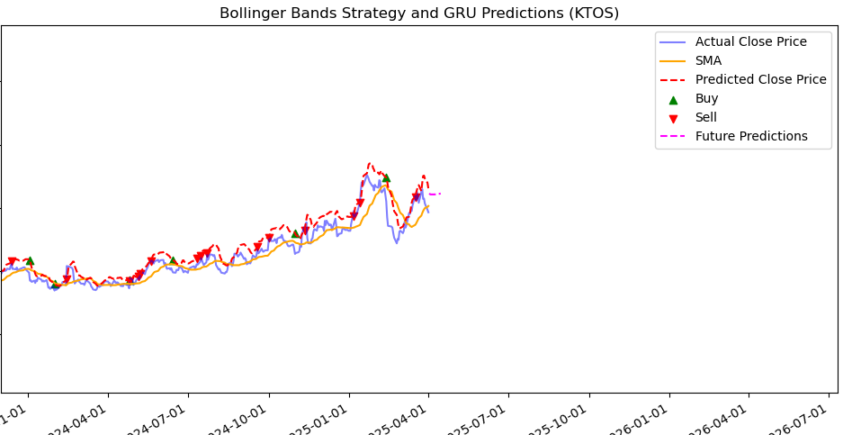

Projects
Mechanical Engineering & CAD Projects
Model Electric Tracked Skateboard (Leaving Cert Engineering, 2023)
See Appendix A for project images
Technical Skills Applied: CAD design, laser cutting, mechanical assembly, propulsion system integration
Description: Designed and built a functional model electric tracked skateboard featuring a tracked propulsion system for stability, front-wheel steering for manoeuvrability, and fold down utility handlebars for portability.
Process & Implementation:
- Created comprehensive CAD models and technical drawings
- Fabricated chassis and structural components
- Integrated motor and power system
- Assembled and tested the working prototype
Outcome: Successfully produced a working prototype demonstrating innovative mobility concepts and mechanical design principles.
Appendix A: Model Electric Tracked Skateboard
Project images and CAD Model
Figure A.1: Completed Tracked Skateboard Prototype CAD Model

Figure A.2: Completed Tracked Skateboard Prototype
Pneumatic Air Engine (University Mechanical Project, 2024)
See Appendix B for project images
Technical Skills Applied: Precision machining, lathe operation, milling, technical drawing interpretation, mechanical assembly
Description: Built a functional pneumatic air engine using steel, brass, and aluminium components as part of a university mechanical engineering project.
Process & Implementation:
- Interpreted and followed detailed technical drawings
- Machined components to precise specifications using lathe and milling equipment
- Assembled components into a functional mechanical system
- Tested and optimised performance using compressed air
Outcome: Produced a fully operational air engine that successfully demonstrated principles of thermodynamics and mechanical motion conversion.
Appendix B: Pneumatic Air Engine
Assembly photos and CAD Model
Figure B.1: Assembled Pneumatic Engine CAD Model
Figure B.2: Assembled Pneumatic Engine
Electronics & Avionics Projects
Motor Controller for Avionics System (University Avionics Project, 2024)
See Appendix C for circuit schematics
Technical Skills Applied: Circuit design, op-amp configuration, potentiometer control, breadboard prototyping
Description: Developed a specialized motor controller for an avionics system that implements precision speed control and servo-like functionality.
Process & Implementation:
- Designed circuit schematic with operational amplifiers
- Implemented potentiometer based speed control
- Created rotary switch mechanism for servo like operation
- Built and tested prototype on breadboard using DC power
Outcome: Successfully demonstrated accurate motor control with smooth operation and reliable performance.
Appendix C: Motor Controller for Avionics System
Breadboard layout
Figure C.1: Circuit Breadboard Design
Avionic Headphone Tester (University Avionics Project, 2025 - Ongoing)
See Appendix D for circuit design documentation
Technical Skills Applied: Circuit schematic design, signal analysis, stripboard implementation, housing integration
Description: Currently developing specialized test equipment for avionic headsets that measures signal integrity, noise levels, and compatibility with aviation standards.
Process & Implementation:
- Researched aviation headset specifications and requirements
- Designed test circuit with appropriate signal generation and measurement capabilities
- Created detailed schematic for implementation
- Currently building prototype on stripboard
Status: In progress, currently at circuit implementation stage with completion expected by mid-2025.
Appendix D: Avionic Headphone Tester
Circuit design
Figure D.1: System Design Schematic
Software & Programming Projects
Arduino Traffic Light System (2024)
See Appendix E for system layout and code samples
Technical Skills Applied: Arduino programming, breadboard wiring, LED control, push-button interfacing
Description: Developed a functional pedestrian traffic light system that simulates real-world traffic control with pedestrian crossings.
Process & Implementation:
- Programmed Arduino to control sequential light timing
- Implemented push button interface for pedestrian crossing requests
- Created appropriate timing sequences for vehicle and pedestrian phases
- Built working prototype on breadboard with LED indicators
Outcome: Produced a fully functional system that accurately models traffic light operations with pedestrian integration.
Appendix E: Arduino Traffic Light System
Arduino Code
Figure E.1: Arduino Code Example
Python Type Racer Game (Leaving Cert Computer Science, 2023)
Technical Skills Applied: Python scripting, file handling (CSV), terminal-based UI design, OS integration
Description: Created a terminal-based typing speed game with multiple game modes and score tracking capabilities.
Process & Implementation:
- Designed user interface for terminal environment
- Implemented typing speed algorithms and calculations
- Created score tracking system with CSV file storage
- Developed multiple game modes with varying difficulty
Outcome: Produced a fully functional game that effectively measures and tracks typing performance.
Python Stock Prediction Tool (Personal, 2024)
See Appendix F for results and code samples
Technical Skills Applied: Python scripting, time series analysis, data preprocessing, machine learning (GRU neural network), data visualisation, API integration
Description:Developed a system to predict stock prices using a Gated Recurrent Unit (GRU) neural network, leveraging the Alpha Vantage API for data acquisition and incorporating technical indicators for enhanced prediction accuracy.
Process & Implementation:
- Fetched historical stock data using the Alpha Vantage API
- Preprocessed data, including handling missing values, scaling with MinMaxScaler, and calculating Bollinger Bands
- Designed, trained, and optimised a GRU neural network model for time series forecasting
- Visualised actual vs. predicted prices, Bollinger Bands, and buy/sell signals to evaluate model performance
- Implemented a function to predict future prices, incorporating smoothed Bollinger Band updates
OutcomeCreated a functional system capable of predicting stock price trends, providing visualisations to aid in understanding potential investment opportunities and risks
Appendix F: Python Stock Predictor
Sample Code
Figure F.1: Python Code Example
Figure F.2 Result
